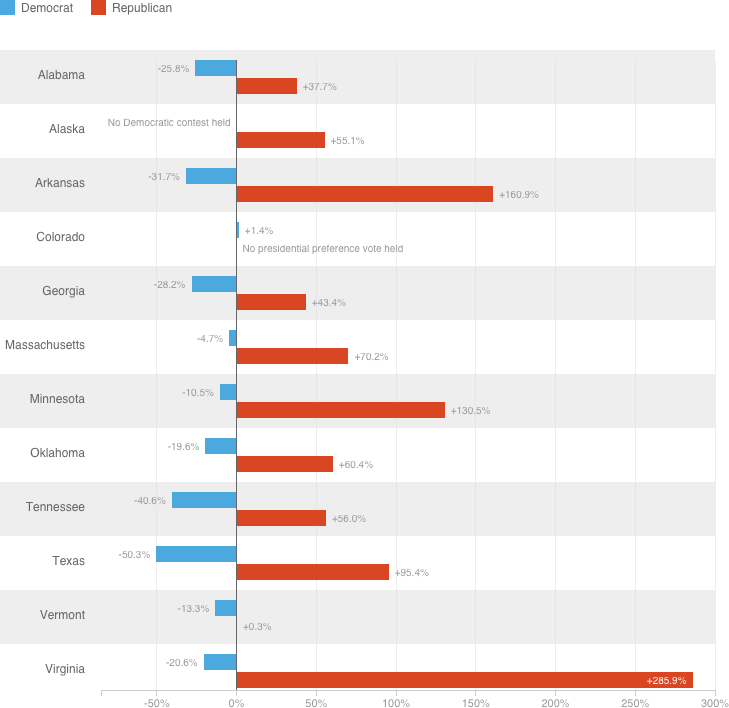

Republican Super Tuesday Turnout Blows Past 2012 Levels
This chart shows how the Super Tuesday states turnout this year compares to the last time the major parties held their presidential nominating contests (Democrats in 2008 and Republicans in 2012). In 10 of the 11 Republican states reporting results, voting turnout was 38 percent higher than in 2012 or more — in Texas, it was 286 percent higher. In Democratic states, meanwhile, only in Colorado was turnout higher than in 2008.
